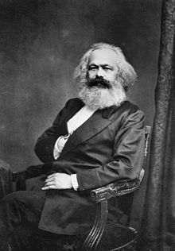
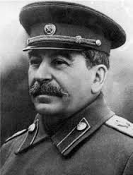
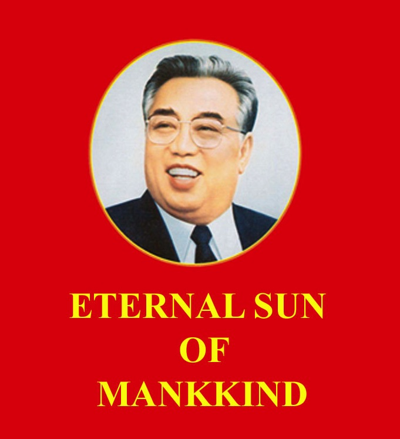
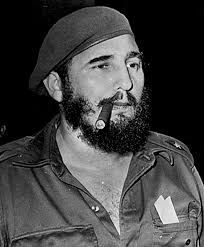
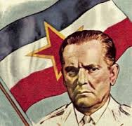

SOME OF OUR FOUNDERS
- KARL MARX, GERMANY
 - COMRADE LENIN, USSR

- COMRADE STALIN, USSR
 - CHAIRMAN MAO, PEOPLE'S REPUBLIC OF CHINA

- ETERNAL PRESIDENT KIM, DPRK
 - PRESIDENT CASTRO, CUBA
 - PRESIDENT TITO, YUGOSLAVIA
 - REVOLUTIONARY CHE, ARGENTINA

- PRIME MINISTER POL, KAMPUCHEA
- PRIME MINISTER HOXHA, ALBANIA
- PRESIDENT CEAUSESCU, ROMANIA